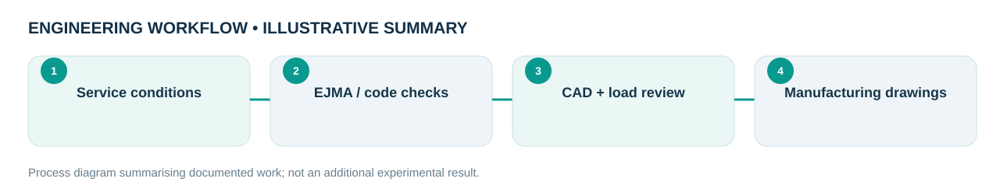

Engineering problem
How can expansion joints and connected piping components be sized and selected for pressure, displacement, corrosion exposure and fabrication requirements?
During industrial mechanical design work at Enetaf Sane Co. (Jan 2022–Jul 2023), worked on expansion joints, bellows, flanges and piping-related equipment. The focus was translating service requirements into manufacturable CAD designs, engineering calculations, design checks and drawing revisions. This is an anonymised professional experience case study, not a reconstruction of a client project.
My role and technical ownership
Mechanical Design Engineer at Enetaf Sane Co. I performed industrial design, technical review, load-related checks, materials work and drawing preparation. Employer and client drawings are intentionally not reproduced.
How I approached the work
- Translated operating-service requirements into bellows, expansion-joint, flange and piping-component configurations.
- Reviewed guide-rod arrangement, bolt quantity and load paths, and revised flange thickness according to applied mechanical loads.
- Selected or revised materials and wall thickness where corrosion exposure or specified service conditions required changes.
- Assessed structural response in SolidWorks Simulation and ABAQUS; coordinated design feedback with fabrication colleagues.
What the evidence shows
Engineering choices were checked with EJMA-based calculation software, applicable ASME / project requirements and structural calculations. No public numerical or certified design result is claimed.
Design files, models & results
Original CAD screenshots, simulation plots or project photographs are shown wherever they were available. Select a figure to open the larger file. Workflow graphics are clearly labelled as illustrative.


Limitations and engineering learning
Specific client drawings, confidential calculations, certified designs, numerical performance results and test data are not available for public release. Details are based on the engineer’s description of professional experience.
Engineering takeaway: The transferable skill is converting ambiguous service conditions into manufacturable geometry and defensible materials / load decisions. The public case is descriptive because the original drawings belong to the employer.